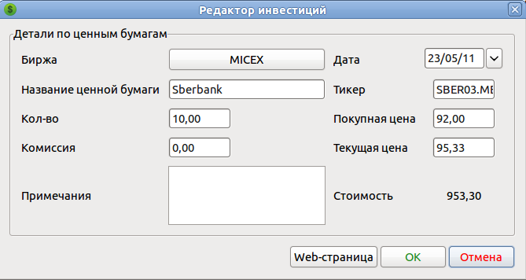

С использованием MMEX можно отслеживать котировки акций.
Сперва создайте Инвестиционный счёт. Для этого выберите в меню пункт
"Новый счёт", затем, в мастере создания счёта, выберите тип счёта
"Инвестиционный".
Придумайте название этому счёту и задайте валюту этого счёта.
После того как вы создадите инвестиционный счёт, итоги по нему
отобразятся на главной странице.
Затем в панели навигации выделите раздел "Инвестиции". В окне
просмотра инвестиций нажмите кнопку "Создать" и заполните детали для
новой инвестиции.
Котировки активов считываются
с сервера yahoo.com. Для российских бумаг
необходимо добавлять суффикс к названию
тикера. Для биржи ММВБ этот суффикс .ME
Перейдите в созданный инвестиционный счёт и создайте новую запись.
В редакторе инвестиций выберите счёт, напишите название, тикер, количество, цену покупки и текущую цену.
Пример: Акции Сбербанка:

Примеры других популярных тикеров для российской биржи ММВБ:
Газпром: GAZP.ME
Ростелекм:
RTKM.ME
Лукойл: LKOH.ME
Норильский никель:
GMKN.ME
Много полезной информации по инвестициям можно найти на сайте социальной сети инвесторов tikr.ru
Сравнительные ссылки для акций сбербанка на сайте yahoo.com и tikr.ru:
http://finance.yahoo.com/q?s=SBER03.ME
http://sber03.tikr.ru/micex